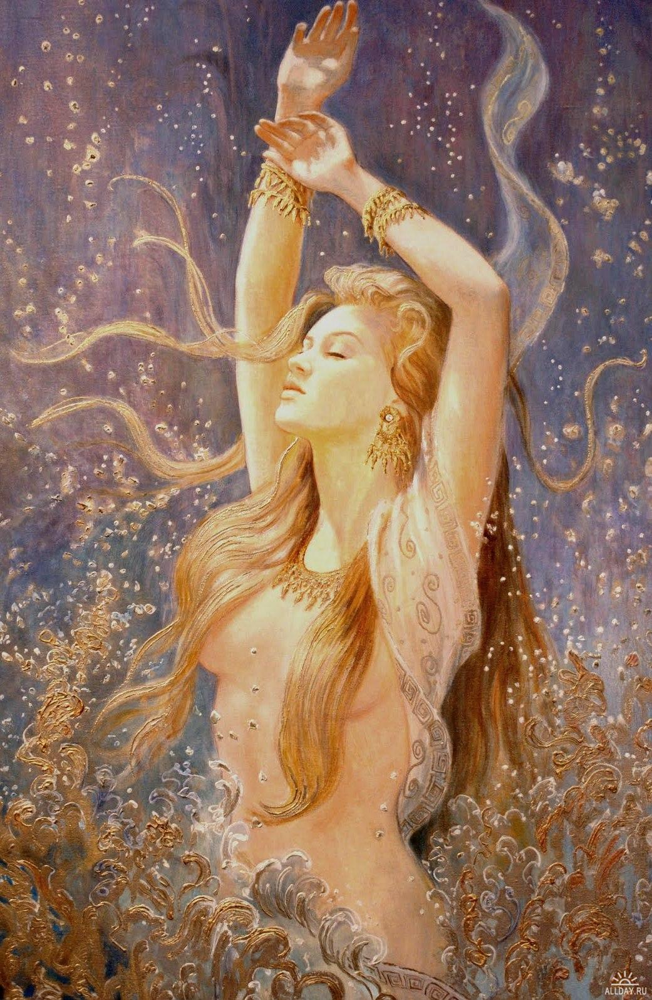
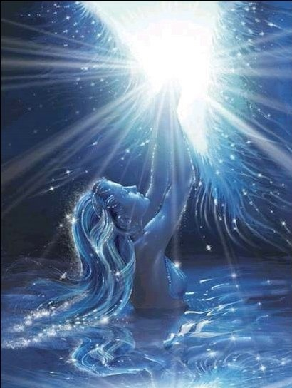

В развёрнутой книге, словно живой,
Есть Дух всей природы, а Он ведь родной,
Он дышит и слышит все тайны твои,
И может исполнить мечтанья Души!
Страницы как крылья, в движенье всегда,
Там речь исполинов, течёт как вода,
Огонь там горит сквозь страницы,
И руны щебечут сказки дедов, словно вещие птицы!
А к ним, чтобы руки свои протянуть,
Вдруг филина тем, ты сумей не вспугнуть,
Защитником мудрым, Сам Род усадил,
Наказ ему дал, чтоб чужой не ходил,
В местах тех заветных путь дивный лежит,
И зоркая птица его сторожит!
И путь весь заложен большими камнями…
А кто же их сдвинет своими руками:
Осыплет свой Род златыми дарами,
И звёзд безконечность увидит глазами,
Что мудрость взойдёт над его же Родами,
Улыбкою ясной засияют все Предки,
Чтоб в радости жили наследники-детки!
2012год
В данной книге расположены избранные произведения. Своим построением букв и созвучием они имеют мощную целительную Силу, посланную Свыше, от Богов.
ПРОСТОРЫ ВСЕЛЕННОЙ
Нашей Вселенной
Нашей Вселенной
Имя женское дано,
Так прекрасно ведь оно,
И своею красотою
Одурманила любовью,
Так нежна в своей же колыбели,
Ангелы в ней песнь запели,
Так чутка, тонка и кротка,
Бисером раскинулась красотка,
К ней вы будьте ласковы, милы,
И за это вам покажет все свои миры!
16 марта 1997 г.
Медитация Души

Сияют серебром снежинки,
И на щеках горячие слезинки,
С мольбой, просящею в глазах,
И лепестками роз, что на губах,
В распущенных, как в шелке, волосах,
Играет ветер локоном,
Перебирает на волнах,
И в запахе цветущего бутона,
И шепотом в полтона,
Уносится вся в танце, в небеса,
И начинает медитацию душа.
Ступает потихоньку, на носочках, не спеша,
И колокольчик Шивы, мелодию звеня,
И барабанчиком стуча,
Спокойствие свободы обретя,
Глядит на все Вселенские Мира,
Где в золотом свечении,
В прекрасном проявлении,
С улыбкой на устах
И с милостью в глазах
С цветами жизни
В четырех руках,
Лик Господа сияет в небесах.
Нектар всего виденья
Бывает лишь с Его благословенья.
Душа проснулась от волненья,
И поняла – всех жизней миг, на удивленье,
Что к Высшему нужно стремленье,
И что порой души паденье
Стекает в другое измеренье.
Но все Божественно творенье.
И вот душа открыла свои очи,
И от увиденного в забытье стоит.
И вдруг, сам Бог, внутри ее, ей говорит:
«Частичка, ты Моя,
И Мною в свет ты рождена,
Весь Мир, и Солнце, и Луна,
И жизнь тебе дана,
Восславить Бога Имена,
Такая Воля вам Моя!»
И руки к солнцу подняла
Проснувшись ото сна душа,
Молитвы прославленья
От сердца вознесла.
И с мирною любовью
В спокойном утешенье,
Дорогу, выбрав к Богу, в направленье,
Что в любящем общенье,
В цветущей радости, прозрении.
10 апреля 1998 г.
Божественное сияние
Напьюсь медовой утренней росы,
Что осветилась от Зари.
Умоюсь в свежести красы,
Что веет легкий ветерок со сказочных полей
И сочных яблони ветвей.
И окунусь я в аромат любви,
Где зреют нежные мечты.
Наполню ауру свою я до краев
Светящим светом доброты,
Сплету венок я из цветов,
Которые собою так просты,
Но обладают силой красоты.
Взлечу на крыльях счастья над Землей,
Где повстречаемся мы вновь с тобой
И растворимся в золотом сиянье,
Что льется нам с небес, на воздаянье.
И будем с трепетом, мы в нем кружится,
Богам от всей души молиться!
И растворяясь в божественном сиянье,
Купаясь в радостном молчанье,
В лучах горячих видишь отраженье,
Великого Отца – Боготворенье!
И нет блаженству там конца,
Пылают от любви там небеса
И теплотой своею согревают,
Вселенские Духовные Мира!
Великой Силой Рода
Весь Мир тот наделен
И сказочно красиво
Струится вечно дивно,
Созвучье благородства.
И в чистом том сознанье,
И как с кристаллом сходства
Живет все в созиданье!
Да просветятся пусть умы,
Со всей планеты, всей Земли,
Что нет без Бога красоты, любви,
Покоя, блага для души!
12 февраля 1997 г.
Чудные виденья
По хрустальной воде,
С кристаллом в руке,
Я иду по реке,
Что горит, будто в огне.
И лечу на коне.
Златогривый, он мчится со мной в небеса,
Сквозь воздушные облака и мира,
Теплый ветер обдувает слегка,
И видны у коня два крыла,
И дорога светла,
Путь освещает нам ярко звезда,
И Вселенная так велика,
В золотой любви сияет она!
О, Космос, великий и чистый,
Божественный, лучистый,
Все волны идут от Тебя,
Что танец играют всей жизни огня.
В бесконечном творенье,
Все пространства, мира,
Как все прекрасно: Огонь и Вода,
Божественный Воздух, Земля.
Все гармонично, и нежности красок полна,
Музыкой флейты струится она –
Сама чистота!
И ведут ангелы моего коня,
По пути знаний, храня,
И душа, Его любя,
Чистоты кристалл неся,
В сердце добротой искря,
На великие дела идя,
За все Бога благодаря.
Предназначение свое неся,
Ведь душа моя – Богов дитя,
И люблю я своего небесного Отца,
Мать Природу, Вечного Творца,
Что дает мне силы, знанья,
Все грехи прощая…
О, Космос просторный,
Горячий, свободный,
То волны лавиной,
То мягкой и тихой,
Цветов сердцевиной,
Прозрачною гладью,
Подобно дыханью,
Космической далью,
И лотоса дивный цветок,
С таким океаном чудесным,
Блаженным и нежным,
Соединяет всех нитью росток,
Солнцеподобный пупок.
О, высь космическая, широта,
Мой дом родной, где доброта.
Где переливы радости кружат,
И серпантины – мысли о Богах,
Где дождь струится, серебрится,
И мчится Сам Господь на колеснице,
Богини красоты прекрасной,
Ему поют, там песни с арфой
Там легкость, свежесть, аромат,
Цветов энергий вечный сад!
И бесконечный звездопад,
И красок яркий фейерверк,
Раскинулись просторы вверх,
И словно искры от костра летят,
Весь мир согреть они хотят,
Огни зажигают салют,
Торжественно царствует там Абсолют,
Звучат в высшей мантре миры,
Сливаясь в сознанье блаженства Вечной Любви!
И покой…
Бог Всесущ, Он с каждою душой!
6 марта 1998 г.
Я вижу солнце золотое
Я вижу солнце золотое,
Его горячие лучи
И приближаются Его горячие огни,
И в Космосе видны Вселенские Миры,
И шумы, всплески, шорохи слышны,
Где звуки раздаются,
Всех жизней мелодичности
Прекрасной красоты,
Играющей на флейте.
И звезд очарованье,
И чувствую в груди,
Что учащается дыханье,
Ведь все трансцендентально –
Божественной Любви!
И нет тех слов,
Что описать смогли б блаженства,
Когда в энергии купаясь – совершенства,
Ты чувствуешь в душе своей,
И понимаешь, что над ней
Есть Высший Разум,
Высшие Мира,
И даже мысленно, не каждого
Запустят, и взглянуть туда,
Там чистота сознанья,
В хрустальном созидании.
Кристалл блистает знаний,
И лишь Покой Божественных желаний.
Галактики частички и Ее посланий,
Летящие на Землю,
И опыт жизни всей познавши,
И измерения души и тела все пройдя,
Спешит обратно к Господу скорбя,
Чтоб разрешил погреться у Его Священного Огня!
Где нет ни ночи, нет ни дня,
Где вечна жизнь, щитом любви себя храня,
Что счастьем радости полна.
Так будь разумной же, душа,
Ты не твори не добрые дела,
А лучше ты стремись вернуться в Высшие Мира!
24 марта 1998 г.
Вселенной картины
Я в руки карандаш возьму,
И Образ им я сотворю,
И нарисую, что невозможно выразить в словах,
Просторы всей Вселенной в небесах,
Где лебединый легкий взмах,
Что в белоснежном оперенье,
Вдруг очарует и уйдет волненье,
Придет в душе успокоенье,
Любовь и радости творенье.
Всю красоту духовного простора,
В цветах танцующего моря,
Благоухающего от любви,
В притоках солнечной зари,
Что в свежести медового нектара,
Предстанет пред тобой
Воздушною волной,
Где в мелодичности гармония звучит,
К тебе в объятия летит
И каждую звезду благословит,
Весь Мир небесный
В красоте царит,
И солнце, воздух, воду, Землю
Нам дарит.
И в души светит,
И ласково всем говорит,
О звездных солнечных дорогах,
О вечности души, ее заботах,
О мире в мире,
Вере и Любви,
Чтобы Вселенские цветы
В душе красавицы Земли
Духовность бы ее, ростками подняли,
И зацвели б сады
На благо всей души
Где человечество зажгли б огни,
Божественной улыбкою любви.
11 ноября 1998 г.
Кружатся звуки стран далеких
Кружатся звуки стран далеких,
Где нот прекрасные полеты,
Где во Вселенной и ее Гармоний,
Звучит капель пространств
И нет там одиноких.
Видны все звезды,
К ним через терни
Мыслью я очищу все дороги,
Осколки все растают и уйдут в потемки,
И шум прибоя Неба-Океана
Обнимет ласковой волной,
Где в миг Божественной Рукой
Сольешься со Вселенной всей душой
Услышишь всю мелодию любви,
Увидишь все творенье чистоты,
Почувствуешь величие природы,
Где в звуках космические ноты.
Божественную арфу
Перебирают нежно волны
И в бессловесной тишине
Нам ветер шепчет о настоящей красоте.
И флейтой звонко все просторы обмывает,
Любовь Вселенскую он вихрем посылает.
С рассветом и закатом,
Где снега белого пурга
Иль музыкой дождя
Мелодия играет дня.
И вот дыхание Огня –
И родилась твоя душа.
Поток космических стремлений
Эмоций, всей любви и вдохновений,
Живи, люби, расти душой,
Твори добро своей рукой,
Вдыхай весь аромат природы,
Какой бы не была погода,
Надежду с верой ты в душе храни,
Любовь – Святое чувство, береги.
17 июня 1999 г.
Вновь я лечу по голубым шатрам долин
Вновь я лечу по голубым шатрам долин,
Там горы, воздух, звуки арф и Магдалин,
Там шелесты прибоя,
Просторы огненного зноя,
Там ввысь дорога по спирали
И бисер с золотом по ней вдруг раскидали,
Цветов жемчужины хрустальной дали
Такого чуда вы никогда и не видали.
Простор Вселенной! О, Высота!
Тут происходят Божьи чудеса!
Я окрыленная любовью вижу свет
Лазоревой дорогой в хрустальном небосводе
Преград тут вовсе нет!
Где медитация проходит во Истину добра,
Заря! Заря! И радуга дождя!
Хрустальный звон колоколов,
Серебряные нити в переплетении цветов,
И благовоний чудный райский сад,
В нем Шива, Кришна, Будда и Аллах!
Сын Божий Иисус,
Встречает нас,
Вселенская любви улыбка на устах,
О, как прекрасно, в тех Святых местах,
Поток тепла, что душу согревает,
От этого она чиста,
И силу мощью набирает.
В пространстве звездном
Велико Творенье!
О, чудо, - это Божье Сотворенье!
Миры, планеты, космос
Все это Божье вдохновенье!
Где тайны мудрости Его и Логос
Высшей степени Ученье!
И только лишь с Учителем
Божественным бывает просветленье!
Что к Высшему идет стремленье.
Любовь ведет во все века,
Она всегда была и будет всех сильна.
О, Руки Космоса, вы так добры,
И пусть молитвы будут искренние вам слышны,
Вы дайте, ради Истинной Любви,
По всей Земле – любви,
Великий Боже, во имя Истины,
Ее, Ты защити!
9 августа 2000 г.
В пейзаже сказочных дорог

В пейзаже сказочных дорог
Видны мгновенья и Божественный восторг
В звучании звездных нот
Мы чувствуем души полет!
И перейдем, картины сей за порог…
О, чудо, что в бессловесной тишине
Молочные дороги льются
При ночной Луне,
Кружится в вальсе облако любви
И Девы космы расплетают
Божественной красы.
Струятся линии их стана
Где в шелестах тумана
Их космы – золотые покрывала.
И нежность рук, прозрачность губ,
Что в танце создавая круг
По Космосу великому плывут.
Рассеивая воздушные волны океана
Где растворяются в ночи…
И вдали,
Их души звездами видны.
Из воображения картины выходи.
На небо чистое глаза свои ты подними…
Гляди..., вот они, те Девы
И их Огни-лучи,
Что держатся на воздухе
Той чистоты Души
В спокойствии величия любви.
В созвездиях мечты
Что в нежных аурах Земли
Мы видим Храм Небесный
И Он живой
И мир Его чудесный –
Дыханье Ты почувствуй пред собой.
Почувствуй и в себе,
Как бьется сердце,
Где переливов музыки небесной
Играют Девы песни всей Вселенной
И возникает образ, сей чудесный.
3 декабря 2000 г.
Молитва в Космос
Люблю Тебя Вселенский Космос, Я,
Прощенье просит у Тебя моя душа.
Наверно много причинил тебе я зла,
Прости, прости мои все грязные
Дела, помыслы, слова,
Что уходили в небеса,
И засоряли Космоса поля,
И осознав свои ошибки,
Прошу прощенья у Тебя,
Прости и Ты, Земля!
Звоните же, Вселенские колокола!
Любовью Божьей очищая все Мира,
Великий Космос, Я люблю Тебя,
И Мать – Земля!
И пусть вибрируют
В Тебе прекрасные все звуки,
Где только Высший Разум, чистота,
Ведь вечно в поисках Твоей Любви, душа!
Родина Души
О, первозданный шум Космического Моря,
Всплеск разговора пенного прибоя,
Мелодии Гармонии слышны
Жемчужной каплею росы.
И с изумрудом волны океана,
Ласкают нежно берега
В заливе серебристого тумана,
Где золото остывшего песка,
Следы свои оставила страна.
Страна полетов и рассветов,
Откуда Луч Любви блистал
Над всей Землей.
Страна та мудрости, ответов
Царившей радугой цветной,
То Родина Души всей человека
В сиянии Космических Дорог
Соединяла плоть и рок.
Вселенной звёзды, отражаясь на воде,
Так заявляя о себе
Всю Силу, Знанья
Той страны всё берегут,
И волны всё бегут…
А волны шепчут…
Шепчут о прекрасном
И жемчуга подкидывая вверх
Желает вновь, соединиться Океан Земной
Души Божественной, Страной!
2003 г. апрель